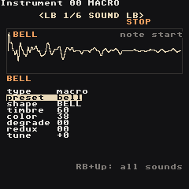
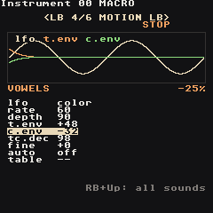

Macro Synth
The macro synth is a third kind of instrument, next to the synth and the sampler — the same idea as the M8's MacroSynth. Instead of building a sound from waves, you pick a shape: a complete synthesis model (analog waves, FM, vowels, plucked strings, bells, 808-style drums, wavetables, noise…) and play it with just two knobs, timbre and color. Every shape uses them differently, so 47 shapes × 2 knobs is a huge palette with very little to learn.

Make one: open an instrument (RB + Right from a phrase), put the cursor on type and press A + Right until it says macro. The cursor sits on preset: A + Left/Right flips through ready sounds, A + Start plays one (Start plays the phrase, as everywhere).
The engine is a port of Emilie Gillet's open-source macro oscillator from the Braids module (MIT licence). It runs at its native 96 kHz and is resampled for the mixer, so tuning, vowels and drum decays sound exactly as designed.
Presets
| Preset | Shape | Sound |
|---|---|---|
init |
CSAW | a plain start for your own sound |
pluck |
PLUCK | plucked string (guitar, koto, harp) |
bell |
BELL | struck bell, long ring |
vowels |
VOWEL | a voice singing a-e-i-o-u, the LFO moves the vowel |
choir |
VFOF | soft "aah" pad with vibrato |
flute |
FLUTE | breathy flute |
strings |
BOWED | bowed string (erhu, violin) |
organ |
HARM | drawbar-style organ |
chords |
WTx4 | a four-note chord from every note |
synclead |
SAW SYNC | classic sync lead with a bite on every note |
foldlead |
FOLD | wavefolded lead |
bass |
SAW SUB | saw with a sub, filter bite |
fmbass |
FM | punchy FM bass |
reese |
SWARM | seven detuned saws, dark |
acid |
ZLPF | squelchy line with glide |
kick |
KICK | 808-style kick |
snare |
SNARE | 808-style snare |
hat |
CYMBAL | metallic hat |
metaltom |
DRUM | metallic tom |
toy |
TOY | circuit-bent toy keyboard |
wavescan |
WMAP | a wavetable that keeps moving |
cloud |
CLOUD | grainy texture pad |
wind |
TWINQ | resonant wind |
Drums are tuned so C 3 sounds right; basses sound two octaves down.
Pages
Seven pages, switched with LB + Left/Right. SOUND and MOTION are the macro synth's own; ENV, FILTER, MOD, MIX and EQ are exactly the Synth pages. RB + Select explains the knob under the cursor — on shape it tells you what timbre and color do on that shape.
SOUND - shape and knobs
| Knob | Does |
|---|---|
type |
sample / synth / macro |
preset |
load a ready sound (overwrites the knobs) |
shape |
the synthesis model, 47 of them (list below). A + Up/Down jumps 8 at a time |
timbre |
the shape's first knob |
color |
the shape's second knob |
degrade |
sample-rate reduction: 00 off … FF = 4 kHz. Aliasing, lo-fi |
redux |
bit reduction: 00 off (16 bit) … FF = 2 bits. Grit, crunch |
tune |
semitones, -12 = an octave down |
The picture is the shape's real output with the current knobs, at C 3: two cycles of a steady tone, the first 120 ms of a struck shape (note start), or 20 ms of a noise (20 ms). Degrade and redux show up as steps.
MOTION - movement

| Knob | Does |
|---|---|
lfo |
what the LFO moves: pitch, cutoff, volume, timbre, color |
rate |
00 = 0.05 Hz … 80 = 1.6 Hz … FF = 50 Hz |
depth |
how much; 00 = off |
t.env |
jump of timbre at every note, -127 … +127; it falls back to the knob |
c.env |
the same for color |
tc.dec |
how fast t.env and c.env fall back (80 = 100 ms) |
fine |
fine tune in cents |
auto / table |
an instrument table that runs on every note |
t.env is how a macro sound gets a "pluck": FM with t.env +40 starts bright and mellows, ZLPF with t.env +60 is an acid squelch.
The other pages
- ENV — attack, decay, sustain, release, pitch drop, glide, as on the synth. Struck shapes (PLUCK, BELL, DRUM, KICK, SNARE) fade on their own: keep
sustnatFFand let the shape decide. - FILTER — lowpass / highpass / bandpass / off after the shape (off in
init), with its own envelope and drive. - MOD — the four modulation slots (envelopes, LFOs, key tracking). On a macro synth they can also move
timbreandcolor— an LFO on timbre is the classic way to make a shape evolve. - EQ — the instrument's own low / mid / high EQ.
- MIX — volume, pan and the reverb / delay / chorus sends.
Shapes
What timbre and color do on each shape:
| Shape | Timbre | Color |
|---|---|---|
CSAW |
notch width | notch depth, phasing |
MORPH |
triangle → saw → square → pulse | darker → fuzzier |
SAW/SQR |
phase / pulse width | saw to square |
FOLD |
wavefolder | sine to triangle |
BUZZ |
sine to buzzy comb | detune of two buzzes |
SQR SUB / SAW SUB |
width | sub one or two octaves down |
SQR SYNC / SAW SYNC |
pitch of the synced oscillator | mix |
SAW x3 SQR x3 TRI x3 SIN x3 |
interval of the 2nd oscillator | interval of the 3rd (snaps to octaves, fifths) |
RING |
2nd sine ratio (ring modulated) | 3rd sine ratio |
SWARM |
detune of 7 saws | highpass |
COMB |
comb pitch | feedback (80 = none) |
TOY |
clock rate | glitches |
ZLPF ZPKF ZBPF ZHPF |
filter cutoff | saw → square → triangle |
VOSIM |
formant 1 | formant 2 |
VOWEL / VFOF |
the vowel: a, e, i, o, u | formant shift (bigger / smaller voice) |
HARM |
centre harmonic | spread |
FM / FBFM / CHAOFM |
FM amount | ratio (feedback / chaotic flavours) |
PLUCK |
damping | pluck position |
BOWED |
bow friction | bow position |
BLOWN / FLUTE |
air pressure | instrument geometry |
BELL |
damping | inharmonicity |
DRUM |
damping | brightness |
KICK |
decay | tone |
CYMBAL |
band cutoff | squares vs noise |
SNARE |
tone balance | snappy noise |
WTBL |
sweep the table | which of 20 tables |
WMAP |
across the 16×16 map | down the map |
WLINE |
scan every wave | smoothing |
WTx4 |
morph the waves | chord of the 4 voices |
NOISE |
resonance | lowpass → highpass |
TWINQ |
resonance of two peaks | their spacing |
CLKN |
loop length | number of steps |
CLOUD / PARTCL |
grain density | pitch scatter |
QPSK |
bit rate | data byte |
Commands
Everything the Synth understands — VOLM PAN_ FCUT FRES FLTR PTCH LEGA PFIN ARPG RTRG CRSH (drive) KILL TABL DLAY — plus two of its own:
| Command | Value | Does |
|---|---|---|
TIMB |
aabb |
timbre to bb at speed aa (00 = now) |
COLR |
aabb |
color to bb at speed aa |
RTRG restrikes the shape too (drum rolls). CHRD is ignored: every chord note would need a whole shape — use WTx4 for chords, or several tracks.
Try: vowels on a held note with TIMB 2000 then TIMB 20FF — the voice slides from "a" to "u". A table with COLR 0000, COLR 0080, COLR 00FF steps through the WTBL tables.
CPU
The shape runs at 96 kHz and is resampled, yet a macro voice costs no more than a synth voice: in the ARM check (tools/dsp-harness/macro_check.cpp, device build under qemu) eight macro voices take 0.7× to 1.0× the time of eight synth pad voices, the heaviest shape being HARM. Eight voices of any shape fit on the RG Nano.